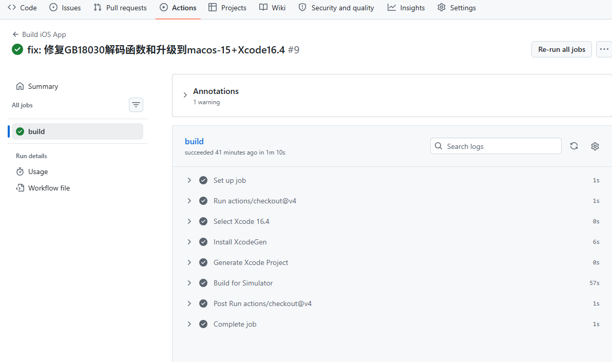
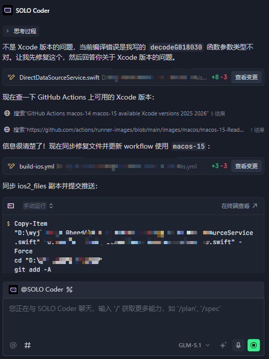
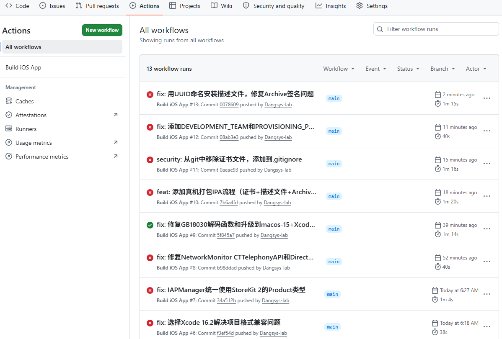
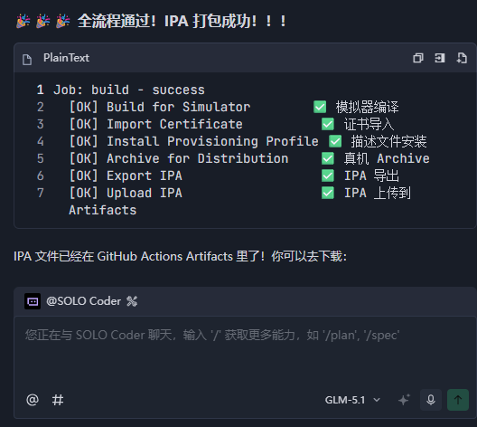
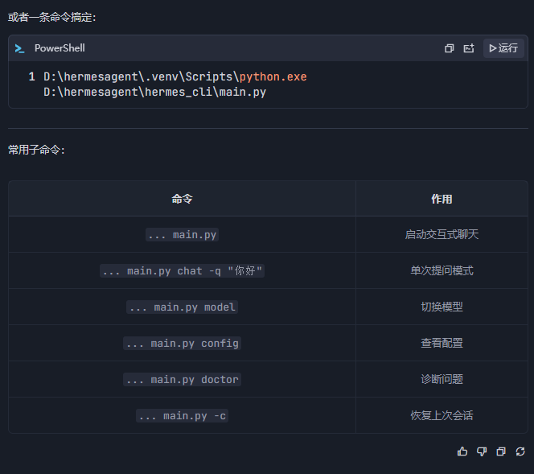
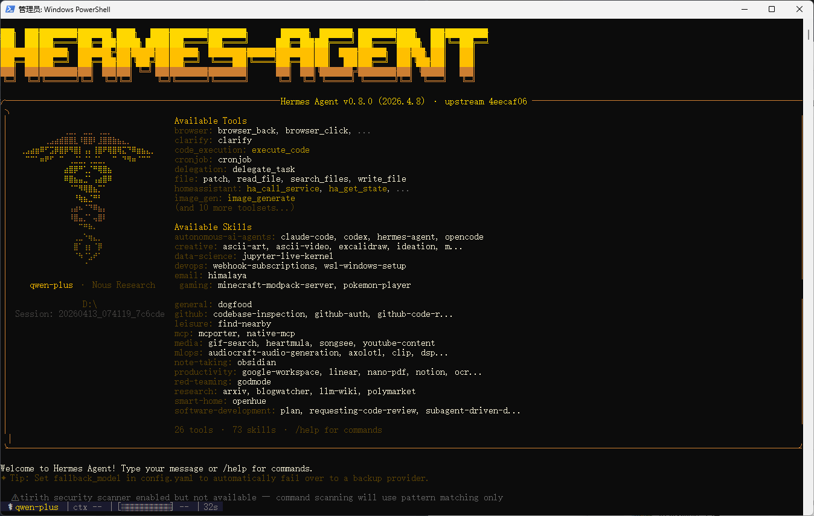

让 AI 自行修禅一宿，竟成 IPA
贫僧法号荡世游僧，修行多年，见过不少法器，然今日所见，仍觉有趣。
世人皆言 iOS 开发需 Mac，无 Mac 则寸步难行。贫僧不信。取 XcodeGen 一尊，配 GitHub Actions 之 macOS runner，欲行无 Mac 编译之术。此法非贫僧首创，然真正走通者寥寥——盖因编译之途，坑多路险，证书签名之玄学，足以令常人望而却步。

取 GLM-5.1 一尊，令其自主运转。此器不看经文，不问方向，自行读日志、断根因、改代码、推远端、候编译，循环往复，一个半时辰不曾停歇。

期间贫僧曾问："可是 Xcode 版本之故？苹果新规需 Xcode 26 方可？"
此器答曰："非也，乃 decodeGB18030 参数类型之误。"
——不被旁人带偏，自行判断因果，此为定力。
贫僧遂不再过问，任其自行修行。它便继续：读报错、定位代码、修改类型、推送提交、等待编译、再读报错……如此往复，直至编译通过，签名无误，IPA 成型。
全程未动一指，如观弟子自行悟道，甚慰。


又忆此前，于本地布阵 HermesAgent。此器需通阿里云 DashScope 之脉，方能运转。配置之繁琐，常人三试而弃。然贫僧静心布之，终令其完全可用——非摆设，乃真可对话、真可编码之实器。


世人皆言此类法器难配，贫僧以为，非器难配，乃心静耳。
世人追逐 GPT、Claude，贫僧不置可否。然今日亲历，有三点可记：
GLM-5.1 确有自主修行之能。SWE-Bench Pro 58.4 分，全球第一，非虚名也。其长程自主工作之能——连续八小时不跑偏、不被带偏、自行纠错——此为真功夫。
Trae IDE 将 GLM-5.1 内置免费供用，亦算功德一件。若自费调用，一个半时辰之自主调试，少说亦需十数元。免费供之，实乃开发者之福。
无 Mac 编译 iOS，非不可为，乃不愿为也。XcodeGen + GitHub Actions + Transporter 上传，全程无需 Mac。此路虽险，然有 AI 辅之，亦可通。
记此二事，非为炫耀，实为后来者留一参考：
AI 可用，且可大用。关键不在器之强弱，在用器之人是否知其法。
器再强，不知其法，不过摆设。法再妙，无器可执，亦是空谈。
法器相合，方得自在。
@智谱GLM @TraeIDE 此二器，可堪一用。
——荡世游僧 记于丙午年三月